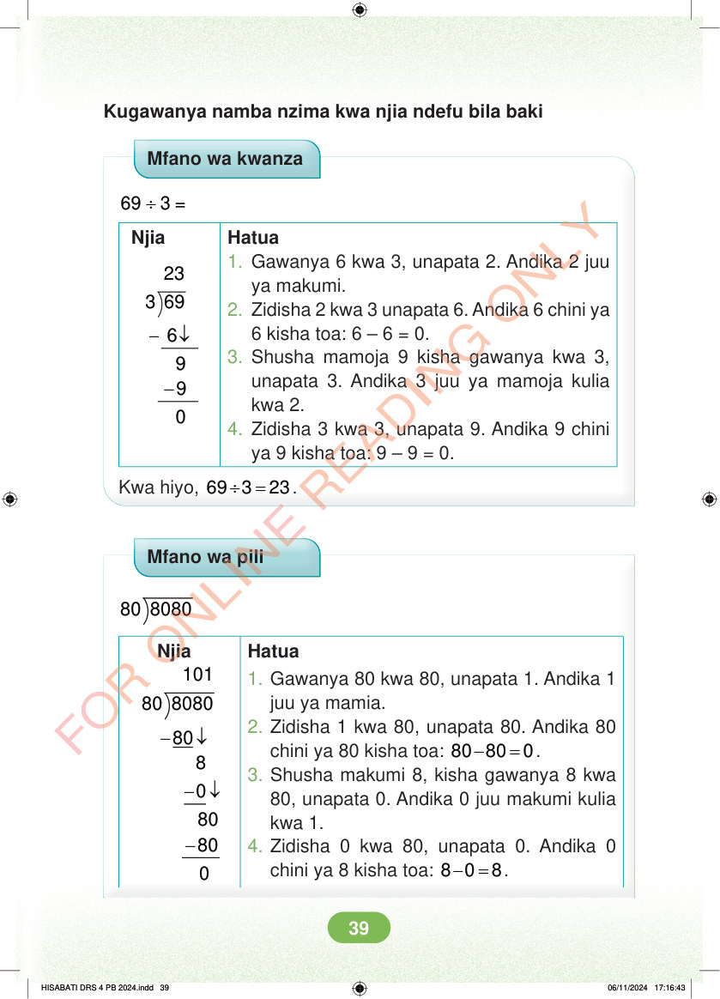

Kugawanya namba nzima kwa njia ndefu bila baki Mfano wa kwanza ÷ 69 3 = Njia 3 69 - ↓ - 9 9 Hatua 1. Gawanya 6 kwa 3, unapata 2. Andika 2 juu ya makumi. 2. Zidisha 2 kwa 3 unapata 6. Andika 6 chini ya 6 kisha toa: 6 – 6 = 0. 3. Shusha mamoja 9 kisha gawanya kwa 3, unapata 3. Andika 3 juu ya mamoja kulia kwa 2. 4. Zidisha 3 kwa 3, unapata 9. Andika 9 chini ya 9 kisha toa: 9 – 9 = 0. Kwa hiyo, ÷ = 69 3 23. Mfano wa pili 80 8080 Njia 80 8080 - ↓ 80 8 -↓ - 80 80 Hatua 1. Gawanya 80 kwa 80, unapata 1. Andika 1 juu ya mamia. 2. Zidisha 1 kwa 80, unapata 80. Andika 80 chini ya 80 kisha toa: - = 80 80 0. 3. Shusha makumi 8, kisha gawanya 8 kwa 80, unapata 0. Andika 0 juu makumi kulia kwa 1. 4. Zidisha 0 kwa 80, unapata 0. Andika 0 chini ya 8 kisha toa: - = 8 0 8. HISABATI DRS 4 PB 2024.indd 39 HISABATI DRS 4 PB 2024.indd 39 06/11/2024 17:16:43 06/11/2024 17:16:43